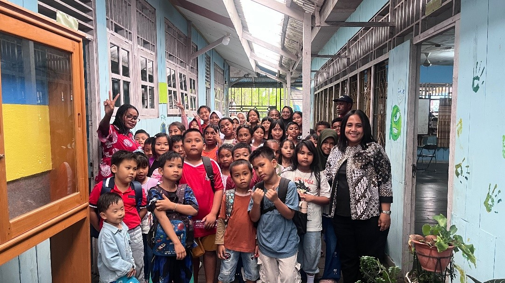
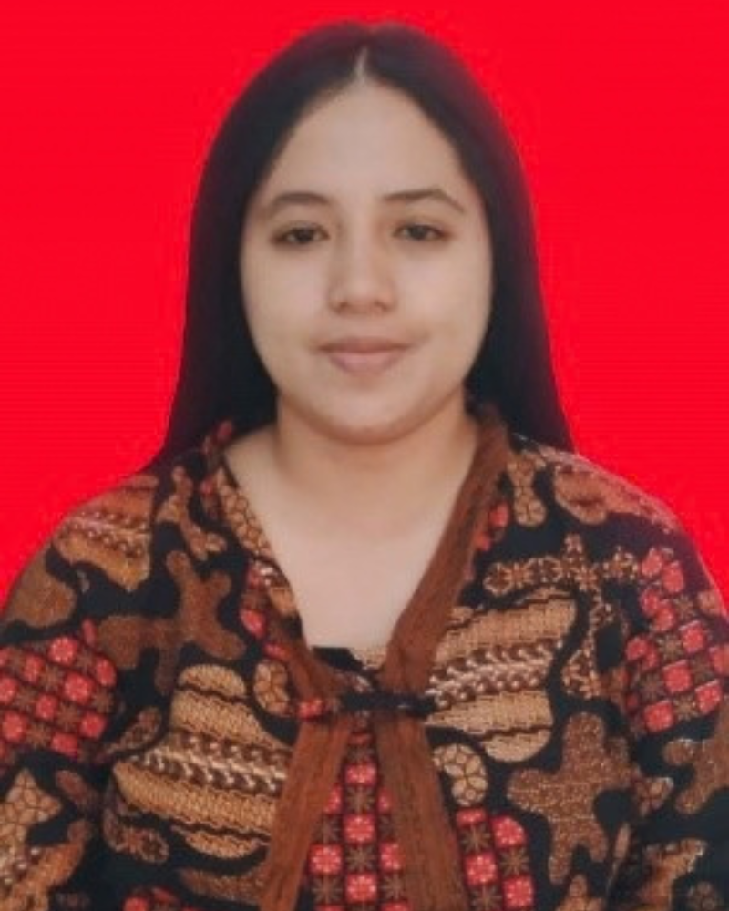

Speak Like a Pro
Learn, Grow, and Shine 🪴
Don't let your child's English stay in the classroom. Build Confidence. Find your voice. Go Global. Give your child the confidence to speak today and the skills to go further tomorrow.


'" />Maria Delfina Dhae, S.Pd., M.Hum
About English Prime Course
English Language Training Program under the Sanggar Kegiatan Belajar (SKB), managed by the Early Childhood Education and Non-Formal Education Division of the Education Office. English Prime Course is a results-oriented English learning institution designed to develop individuals who can communicate with excellence, speak with confidence, think independently, and create meaningful impact in a global environment.
A place to grow, a place to learn, a place to become
English Prime Course is a growth-centered English learning institution.
Learners are given the space, guidance, and opportunities to learn, practice, discover their potential, and grow through English.
We believe that learning English is not simply about mastering vocabulary, grammar, or speaking skills. It is about developing the person behind the language—building confidence, independence, intellectual ability, adaptability, and the courage to communicate with the world.
Featured Course
English Prime Course: Speak Like a Pro
Our English Prime Course is built on the Communicative English Curriculum (CEC), an integrated framework combining the Indonesian Kurikulum Merdeka (KM), a learner-centered approach, and the Common European Framework of Reference for Languages (CEFR). Contextual and culturally relevant for Asmat learners.
Real Communication, Real Confidence
Our teaching focuses on the skills that matter most in real life: speaking, listening, reading for meaning, and purposeful writing — all grounded in practical vocabulary and functional grammar.
- Real-life communication & speaking fluency
- Listening comprehension & pronunciation
- Practical vocabulary & functional grammar
- Reading for meaning & purposeful writing
- Critical & creative thinking, CCU awareness
A Curriculum Built to Last
From the textbook to the teaching method, every part of the program is designed to move learners from modelling to independent production.
Our Programs At
English Prime Course
Three progressive levels designed for children, youth, and the Asmat community, from essential vocabulary to confident communication.
Little Starter
Recognize, understand, and use essential vocabulary related to personal details, everyday life, and surrounding environment.
Happy Beginner
Meaningful daily phrases and language expressions that learners can use right away.
Junior Talk
Communication, confidence, and independence: introducing yourself, your environment, and global culture.
Our Classes
Available Class Groups
Nine active class groups across three levels — each designed to match learners' readiness and pace.
Little Starter
6 Classes · Foundation Level. A warm, playful introduction to English for young learners — from essential vocabulary to simple daily phrases.
Happy Beginner
2 Classes · Daily Phrases. Learners build practical communication skills with phrases and expressions they can use right away.
Junior Talk
1 Class · A1 Level. Confident, independent speaking for learners ready to express themselves on real topics and ideas.
6 Little Starter · 2 Happy Beginner · 1 Junior Talk
Mission Implementation
How We Implement Our Mission
Each level of the English Prime Course has a distinct learning balance, designed to match the needs and readiness of learners.
Little Starter
Strong receptive foundations paired with gentle production — young learners build vocabulary and confidence through listening, doing, and small wins.
Happy Beginner
Balanced growth across all four dimensions — with a stronger emphasis on real-life interaction and character building.
Junior Talk (A1)
The most production-focused level — learners speak, debate, and present. Strong on interaction and character, light on receptive input.
From strong receptive foundations at Little Starter, to confident production and interaction at Junior Talk (A1).
Course Levels
Core Pillars & Learning Path
A structured path from recognizing essential vocabulary to speaking English with confidence.
Little Starter
Essential vocabulary — recognize, understand, and use essential vocabulary related to personal details, everyday life, and the surrounding environment.
Happy Beginner
Meaningful daily phrases and language expressions that learners can use right away.
Junior Talk
Communication, confidence and independence — recognize, understand, and interact about personal details, everyday life, introducing yourself, and the surrounding environment.
How We Teach
Our Methodology
A communicative, learner-centered framework that moves from modelling to independent production.
BKoF
Building Knowledge of the Field: building cultural and topic context before language work. Learners explore the topic, share what they know, and discover new vocabulary in a meaningful setting.
MoT
Modelling of the Text: being a model, showing learners how language works in real use. Tutors demonstrate with authentic examples — so learners see exactly what good looks like.
JCoT
Joint Construction of the Text: guiding students in collaborative construction. Learners and tutors build the language together — the tutor scaffolds, the learners produce.
ICoT
Independent Construction of the Text: students independently produce spoken and written texts. This is where real learning shows — the learner owns the language, without help.
Communicative Language Teaching · Project-Based Learning · Total Physical Response · Grammar Translation Method · Audio-Lingual Method · Genre-Based Pedagogy
Learning Experience
Teaching Methods & Activities
A blend of classroom practice, digital learning, and real-world English use.
Assessment
Assessment, Reflection & Follow-Up
Every lesson is built around a clear Lesson Plan containing learning outcomes, learning objectives, learning activities, methods, media, and assessment. Learning is monitored through a structured assessment cycle.
- Pre-Test: measuring entry level
- Formative: ongoing monitoring
- Summative: end-of-unit evaluation
- Rubric & Achievement Criteria
- Reflection & Follow-Up: Anecdote Record
Vision & Mission
What We Stand For
Vision
To inspire lifelong learners by fostering independence, adaptability, and a passion for continuous growth.
Our vision guides everything we do at the English Prime Course — from the courses we offer to the way we support every learner in their personal and academic growth.
Mission 1 — Excellence in Teaching
To deliver cutting-edge, results-oriented teaching methods that elevate English-speaking skills and cultivate intellectual excellence.
Mission 2 — Lifelong Learners
To inspire lifelong learners by fostering independence, adaptability, and a passion for continuous growth in English communication.
Mission 3 — Community Focus
To serve the Asmat community through accessible, contextual education that supports literacy, skills, and local empowerment.
Mission 4 — Intercultural Awareness
To nurture intercultural understanding and global awareness alongside local identity and cultural pride.
Frequently Asked Questions
Questions About English Prime Course
Everything you need to know before joining our English program. Still have questions? Feel free to reach out to us.
Yes, it is completely free. The English Prime Course is a non-formal education initiative under the Asmat Education Office. There are no tuition fees, no registration fees, and no hidden costs. Everything — classes, materials, and learning activities — is provided free of charge for the community.
The program is open to everyone in the Asmat community — children, youth, and adults. We have three levels designed to match different ages and readiness: Little Starter for young beginners, Happy Beginner for learners who want to build daily communication skills, and Junior Talk (A1) for learners ready to speak with confidence.
Registration is simple. You can come directly to our office at Jl. Postel, Kabupaten Asmat, Papua Selatan during office hours (15.00 - 18.00), or contact us via WhatsApp at 08218887004 (Mam Delfin) or 085691296762 (Miss Putri). Our team will guide you through the enrollment process.
Each level follows a structured learning path with a balanced mix of receptive learning, production-based practice, character building, and interaction. Learners progress at their own pace, guided by regular assessments — pre-test, formative, and summative — so every learner can grow steadily and confidently. Contact us for the latest class schedule.
We use Beehive 1-3 from the Oxford English Learning Framework — a comprehensive grammar and vocabulary syllabus with course-integrated assessment. Our teaching blends Communicative Language Teaching, Project-Based Learning, Total Physical Response, Audio-Lingual Method, and Genre-Based Pedagogy, all aligned with the CEFR and Kurikulum Merdeka.
Reach out to us — we're happy to help you get started.